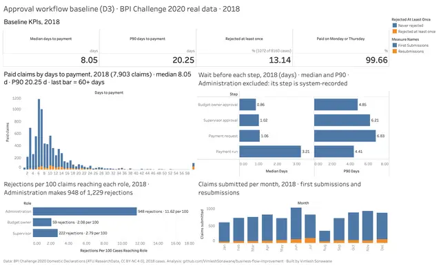
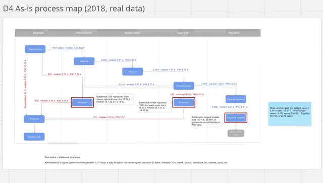
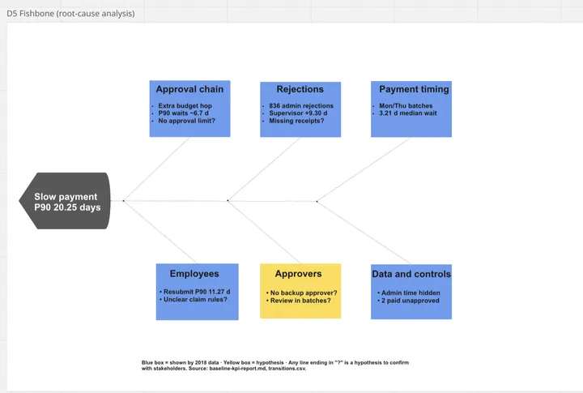
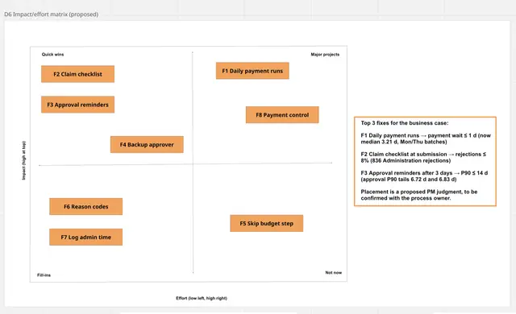
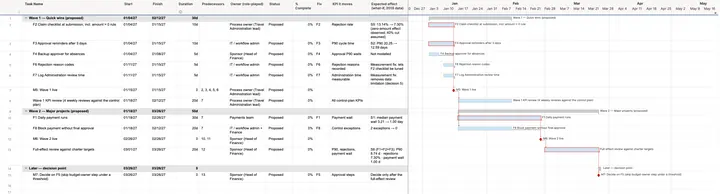
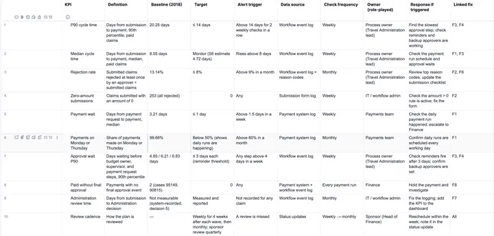

DMAIC · real data · BPI Challenge 2020
Approval Workflow Improvement
Why 1 in 10 travel-expense claims at a university waits more than 20 days to be paid, and three proposed fixes that meet every target in a what-if model built on the real 2018 process log (10,500 claims, 56,437 events).
2018 baseline
Base: 7,903 paid 2018 claims; rejections over 8,160 submitted claims. Measured from the real log.
Key findings
- Payments run in batches. They are released on Mondays and Thursdays, so the wait from payment request to payment (median 3.21 days) is the longest of any step.
- Approvals have long tails. Most are quick, but the slowest 10% wait 4.85 days (budget owner), 6.21 days (supervisor) and 6.83 days (before the payment request).
- Rework costs time. Administration made 948 of the 1,229 rejections. Rejected claims take a median of 13.21 days to pay, against 7.34 days; a supervisor rejection adds the most (+9.30 days).
- Zero-amount claims are always rejected. 253 of the 1,072 rejected claims had an amount of zero, and none was paid.
- Control exceptions. Two claims were paid without final approval, flagged for review (a control failure or a data issue, not determinable from the data).
Before and after: all three fixes (S6)
What-if estimates on 2018 data, not results. None of the fixes was implemented. The rejection rate is over the 7,907 claims left after zero-amount claims are blocked (7.07% over all 8,160). The 40% cut in Administration rejections is an assumption; the zero-amount effect is observed.
Top 3 fixes
Daily payment runs
Pay every working day instead of Mondays and Thursdays, so no approved claim waits days for the next run.
Claim checklist at submission
Check the claim is complete before it is sent, and block zero-amount claims, which are always rejected.
Approval reminders after 3 days
Remind budget owners and supervisors when a claim has waited 3 days for their approval.
Documents
Screenshots












Click an image to open it full size.